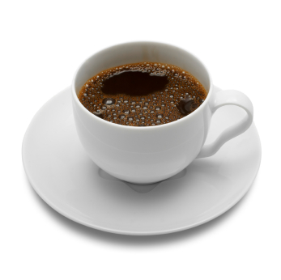

Welcome to YouBrew!
Love coffee, but hate café prices? Us too! Here at YouBrew you can learn the simple and rewarding process of brewing your own coffee at home. You will find that brewing your own coffee will not only save you money, but with practice can give you a better tasting cup than most cafés ever could! YouBrew is also your one-stop source for the highest quality certified organic specialty coffees from around the world. Sign-up for our Coffee of the Month Club and have a pound of carefully selected coffee delivered right to your doorstep!

There are many different types of coffee brewers on the market today, so many in fact that we could make a whole separate web page about the types of brewers alone. But for the sake of simplicity and quality we are going to use what is called the Pour-Over brewing method.
- Pour-Over:
- A method of coffee brewing in which hot water is literally poured over ground coffee causing the it to pass through the grounds and brew. The coffee then runs through the cone-shaped filter on which the grounds sit, and through a funnel which drips the coffee into a cup.
This brewing method may seem too simple to brew great coffee, but the simple design is actually an advantage as it offers more control over how your coffee turns out. For this reason, in fact, the pour-over brewing method is actually the most commonly used brewing method at brewing competitions such as the National Barista Championship

When it comes to brewing coffee, the one part that is most likely to make or break the finished product is the beans. Few people realize that coffee beans, especially pre-ground, begin to go bad within just a few weeks. The truth is, as soon as beans are roasted they are susceptible to oxidization. Oxygen can make the oil inside the beans go rancid within a few minutes, which is why coffee should be ground just before brewing to ensure the best flavor. The oils in the beans make all the difference in a great tasting cup of coffee. So make sure that your coffee is kept as fresh as possible in an airtight container

Step 1
Boil enough water for the size of your cup, plus a few ounces extra as the coffee grounds will retain some in the brewing process. While water is boiling, take a new filter and rinse it in hot water from the faucet. This will rinse away any loose paper particles that could end up in your coffee. Unless you like the taste of paper, in which case this can be skipped.
Step 2
Measure and grind your coffee. Measuring by weight is ideal, a good starting point would be 2 grams of coffee for every ounce of water. Grind the coffee on your grinder's medium setting (the grounds should be the consistency of very coarse sand).
Step 3
This step is called extraction, as the hot water extracts the microscopic solids and oils from the grinds. This step is broken down into three small steps to make it easier to follow, as extraction usually happens pretty quickly and needs to be done correctly.
- Slowly pour just enough hot water onto the grounds to soak all of them.
- Wait 15 seconds or so.
- Slowly pour the rest of the water onto the grounds, moving the stream of water in a circular motion around their perimeter as you pour.
If everything went as planned then you should now have a great cup of coffee in front of you!